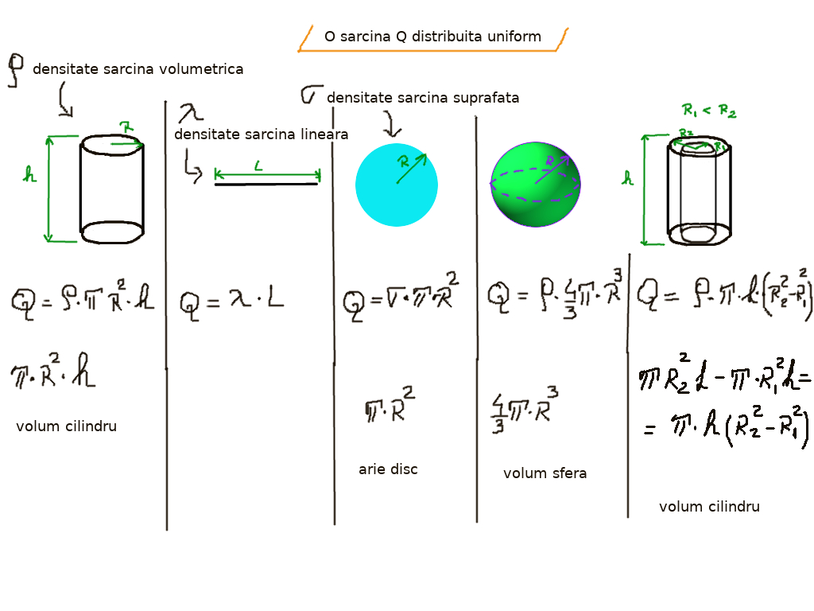
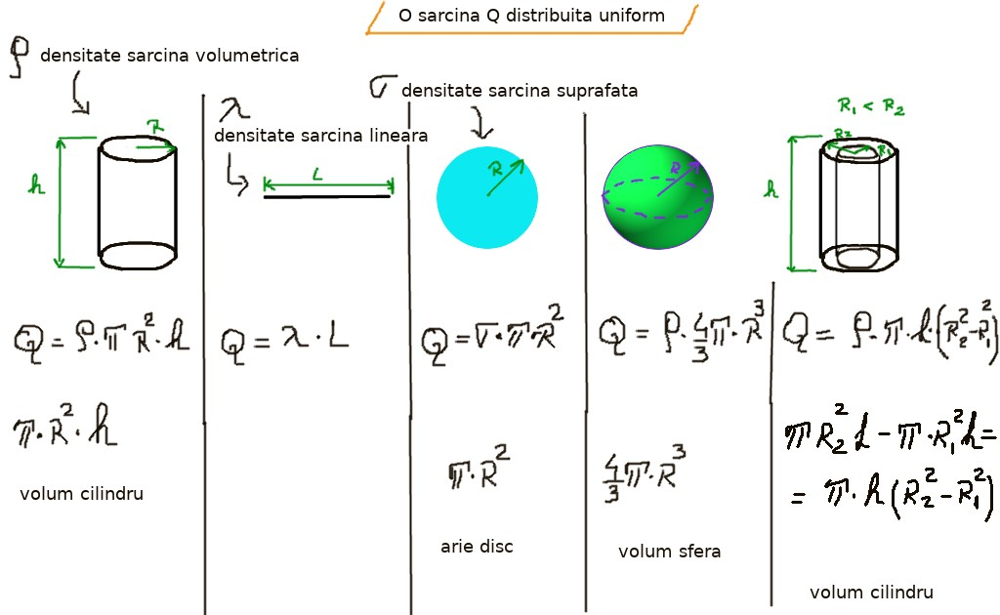

Sarcini electrice distribuite uniform
Închide meniu
Acasă
Legea lui Gauss ∵
Simetrie lege Gauss
Flux electric: suprafață plană
Metodologie lege Gauss
Flux electric: suprafață ne-uniformă
Flux electric: suprafață închisă
Flux electric total: suprafață închisă
Flux electric: dipol suprafață închisă
Câmp electric: plăci || infinite 1/2
Câmp electric: plăci || infinite 2/2
Câmp electric: fir infinit, Q uniform
Câmp electric: cilindru infinit, Q uniformă
Câmp electric: cilindru infinit, Q ne-uniformă 1/2
Câmp electric: cilindru infinit Q ne-uniformă 2/2
Câmp electric: sferă Q uniformă
Câmp electric: sferă Q non-uniformă
Câmp electric: Q punctiformă
Câmp electric ∵
Câmp electric
Câmp electric la distanță
Sarcini electrice distribuite uniform
Liniile câmpului electric 1/3
Liniile câmpului electric 2/3
Liniile câmpului electric 3/3
Proprietățile liniilor de câmp magnetic
Potențial şi energie potențială 1/3
Potențial şi energie potențială 2/3
Potențial şi energie potențială 3/3
Potențial electric câmp electric uniform 1/3
Potențial electric câmp electric uniform 2/3
Potențial electric câmp electric uniform 3/3
Potențial electric Q punctiforme
Potențial electric sistem Q punctiforme
Potențial electric
Forțe dipol
Distribuție sarcini electrice
Linie sarcini electrice uniforme 1/2
Linie sarcini electrice uniforme 2/2
Distribuție plăci paralele
Distribuție sferă
Distribuție cilindru
☰
❮
❯
VRU
⟢ Sarcini electrice distribuite uniform
